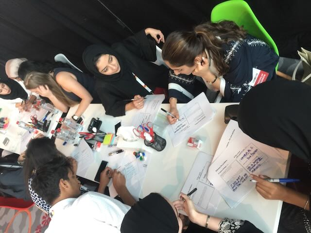
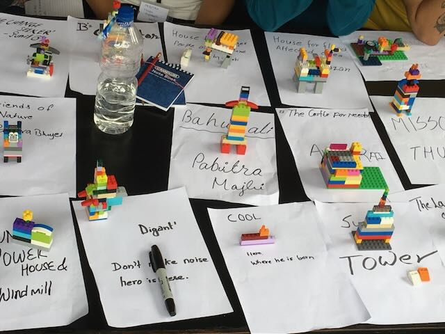
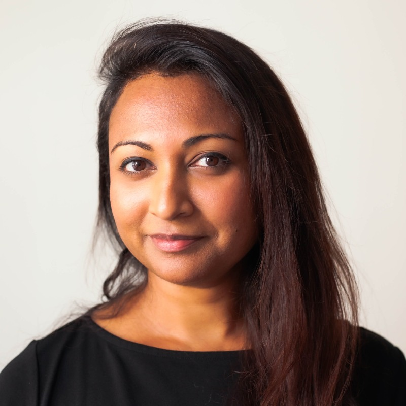
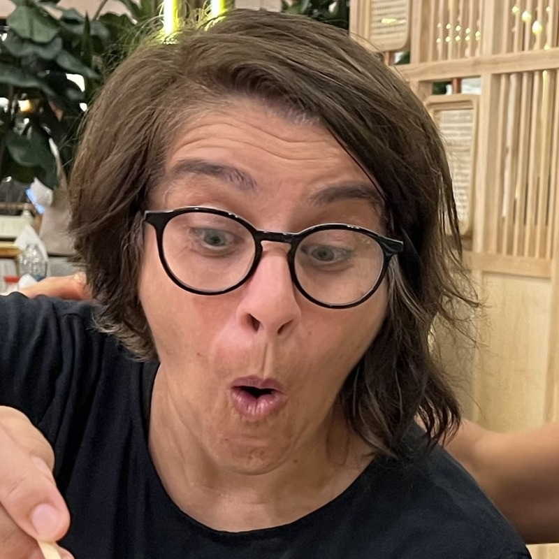
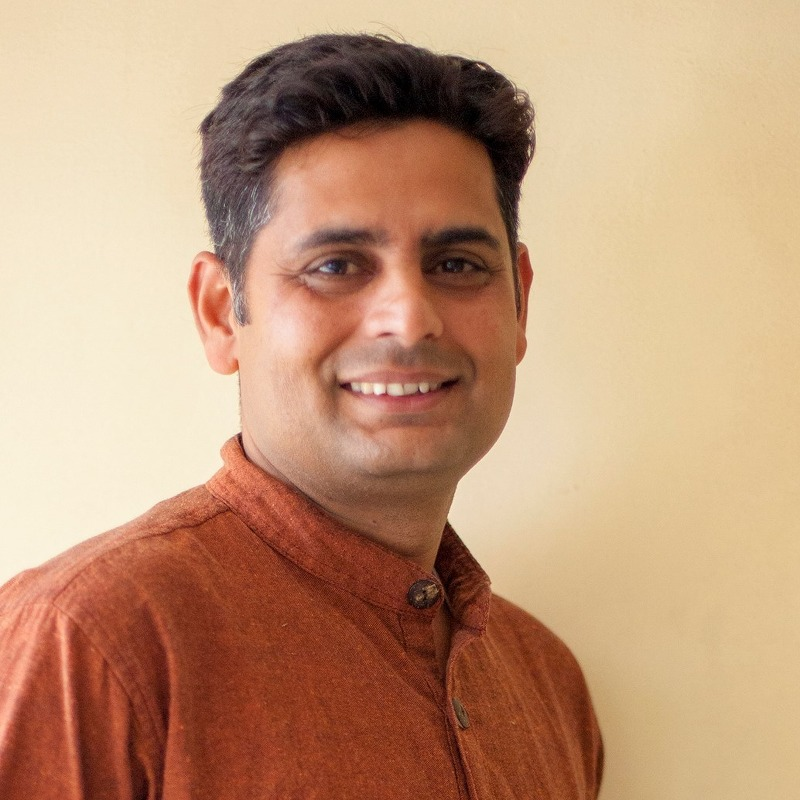

IN WORKSHOP CATALOGUE
인(IN)
워크숍
워크숍
하나의 방법, 열 개의 문.
그룹과 조직을 위한 워크숍 카탈로그.
그룹과 조직을 위한 워크숍 카탈로그.
2026
모든 워크숍의 바탕
ME=WE · 뒤집기 · 여섯 악장
나의 성장과 곁에 있는 사람들의 안녕은 서로 다른 일이 아닙니다. 종이 띠 하나를 반 바퀴 돌리면 두 면이 하나가 됩니다. 사람 사이에서도 그런지, 손으로 확인하는 것에서 시작합니다.
01
IGNITE
무언가 깨어납니다 — 호기심, 나의 강점, 변화가 가능하다는 감각.
02
ME ≠ WE
아직 나의 틀 안에 머물러 있는 때.
03
ME + WE
나의 선택이 밖으로 번져 나가는 것을 알아차리기 시작하는 때.
04
( ME WE ) · THE FLIP
무언가를 마주하고, 열고 들어가 연결하려는 것. 뒤집기입니다.
05
ME = WE
내가 움직이면, 관계의 장이 함께 움직입니다.
06
GLOW
전환의 경험이 힘이 되어, 일상의 생각과 말과 행동으로 이어집니다.
모든 워크숍은 이 여섯 악장을 지나며, 참여자가 시도해 볼 ME=WE 행동 하나를 알아채며 마칩니다.
01
시그니처 · 여기서 시작
뫼비우스 만들기
세 시간, 나와 서로를 보는 방식이 달라집니다.
뫼비우스 만들기는 손으로 만들고 함께 풀어내는 워크숍입니다. 종이를 만지며, 내 삶에서 ME와 WE가 어떻게 만나고 어긋나는지 솔직하게 이야기합니다. 그러다 어느 순간, 떨어져 보였던 것들이 이어져 보입니다.
모두가 참여합니다. 이 무대에서는 모두가 주인공입니다. 퍼실리테이터는 각자 자기 말로 이야기할 수 있는 자리를 지킵니다. 오랜만에 그렇게 말해 보는 사람도 있습니다.
세션이 끝나도 알아차리는 연습은 평범한 하루 안에서 이어집니다. 하나를 뒤집어 보고, 하나를 연결해 보고, 무엇이 달라지는지 지켜봅니다. 한 번 끝내고 마는 직선이 아니라, 한 바퀴 돌아올 때마다 더 깊어지는 연습입니다.
모두가 구체적인 다짐 하나를 가지고 돌아갑니다. ME=WE 스토리, 일상으로 가져갈 변화.
소요 시간
3시간 · 반나절 또는 하루로 확장
인원
12–15명 · 퍼실리테이터 1인
형식
대면 · 손으로 만들며 · 한 · EN · 繁
카탈로그
열 개의 워크숍
모든 워크숍이 여섯 악장을 지납니다. 기간과 언어, 인원, 그림·움직임·대화의 비율은 사전에 함께 정합니다.
코어 · 누구나
뫼비우스 만들기
만들고 이야기하며 ME=WE를 처음 만나는 자리. 모든 워크숍의 문.
3시간 · 반일/종일
12–15명 · 대면
12–15명 · 대면
조직 · 팀 · 공동체
메타노이아
붙들고 있는 전제를 드러내고, 계획의 변경이 아니라 관점의 전환으로.
1–4일 · 패키지
한 팀 단위 · 후속 세션
한 팀 단위 · 후속 세션
청년 · 합숙
정글 잼
일상을 떠나 가상의 마을을 지나는 여정. 서로를 응원하며 비상하는 이틀.
1박 2일 · 합숙
16–26세 · 15–25명
16–26세 · 15–25명
퍼실리테이터
패스파인더
참여를 넘어 그 자리를 직접 지키는 법. 이수하면 수료증.
워크숍 시리즈
온라인 또는 대면
온라인 또는 대면
부부 · 가족
두 날개
뿌리와 날개를 함께 붙드는 연습. 동네 단위로도 확장.
세션 시리즈
부모 8–14명
부모 8–14명
주니어 유스 · 청년
삶 속의 삶
움직임, 수면, 식사, 고요 — 하루를 결정하는 네 가지를 함께 연습.
짧은 세션 시리즈
소그룹 · 사이 실천
소그룹 · 사이 실천
누구나
영웅의 여정
인류의 공명 신화를 자기 이야기로 걸어 보기.
안내되는 여정
대면 또는 온라인
대면 또는 온라인
청년
그림자 전환
아홉 가지 도전을 지나며 자기 그림자와 마주하기.
이틀 · 합숙
청년 그룹
청년 그룹
누구나 · 반나절
ME=WE 버킷 리스트
하고 싶은 것을 분명히 하고, 첫 한 걸음을 정하기.
반나절
대면 또는 온라인
대면 또는 온라인
여성
ㅁ.ㅇ.ㅈ. 리트릿
웃음. 놀이. 전환. 재충전.
일정 협의
여성 모임
여성 모임

02
조직 · 팀 · 공동체
메타노이아
안에서부터의 변화. 조직이 붙들고 있는 전제를 드러내고, 태어나려는 것을 감지하고, 성장의 길에 함께 헌신합니다.
1–4일 · 패키지
한 팀 또는 한 단위
프로토타이핑 키트와 후속 세션

03
청년 · 1박 2일
정글 잼
일상을 떠나, 존재하지 않는 곳으로. 게임과 그림, 움직임과 역할극으로 자신을 정직하게 바라보고, 자신만의 모양을 안고 돌아옵니다.
이틀 · 합숙
16–26세 · 15–25명
벽에 그려도 되는 방
형식과 준비
모든 회차는 일부러 다르게.
누가 오는지, 무엇을 안고 오는지 알려주시면 꼭 맞는 버전을 함께 짓습니다.
인원
12–15명이 기본. 합숙형은 15–25명, 조직 과정은 한 팀 단위로.
시간
3시간부터 4일까지. 반나절, 하루, 이틀 합숙, 혹은 시리즈로.
공간
움직일 수 있는 방. 의자를 옮기고 벽에 붙이고 그릴 수 있는 곳. 재료는 저희가 준비합니다.
언어
한국어 · English · 繁體. 지역 IN-콜렉티브가 각자의 언어로 진행합니다.
가져가는 것
직접 만든 결과물 하나, 그리고 소리 내어 이름 붙인 작은 행동 하나.
누가 진행하나
이 사람들이 방을 엽니다.
IN-콜렉티브의 실천가들이 워크숍을 엽니다. 회차마다 어시스턴트와 코-퍼실리테이터가 함께 들어갑니다.

정윤선
창립자 · Seoul
사회혁신 연구자. 2015년 ME=WE를 시작해 다섯 나라에서 워크숍을 열어 왔습니다.

Joanne Renaux
아티스트 · Toronto
미술교육 교수를 지낸 아티스트. 예술로 대화의 문을 엽니다.

Irene Pavlos
애니메이터 · Riyadh
여성기업 창업가. 팀과 여성 모임의 워크숍을 진행합니다.
김태진
교육자 · Beijing
중국어 박사. 교실에서 자기 돌봄을 연습으로 다룹니다.
Vahid Buehrer
애니메이터 · Beijing
동양의학 학도. 움직임과 그림으로 세션을 엽니다.

Saurav Dhakal
사회혁신가 · Kathmandu
사회적 기업가. 네팔의 마을과 네트워크에서 실천합니다.

Tony Huyuhua
CTO · Taipei
DT · 게임 개발자. 워크숍의 디지털 도구를 만듭니다.
Are You IN?
인(IN) 스튜디오에서
함께 시작하시려면.
함께 시작하시려면.
누가 오는지, 무엇을 안고 오는지 알려주세요. 30분 사전 대화로 시작합니다.
01
연락 주세요 — 누가 오는지, 무엇을 안고 오는지.
02
함께 설계합니다 — 기간, 언어, 인원, 비율.
03
방에서 만납니다 — 재료는 저희가, 공간은 여러분이.
www.innoco.co · hello@innoco.co · 서울, 대한민국
© 2016–2026 IN (INNOCO).
ME=WE는 크리에이티브 커먼즈로 공유됩니다.
ME=WE는 크리에이티브 커먼즈로 공유됩니다.